Works
NLP / LLM
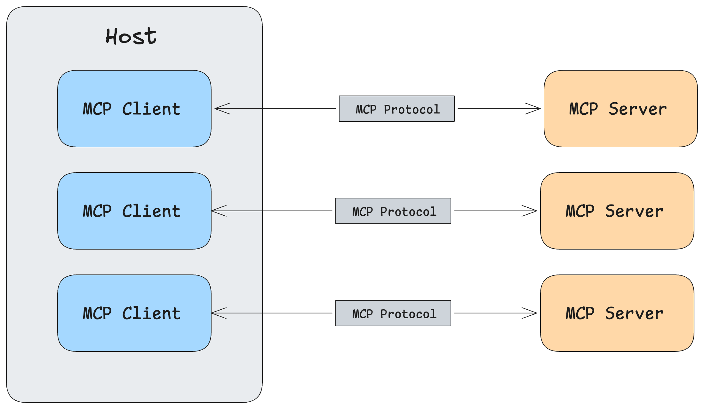
MCP Walkthrough
An MCP-powered research assistant — from basic tool calling to a multi-server chatbot with resources, prompts, and Claude Desktop integration.
LegoLLM
OngoingComplete LLM framework from first principles — tokenization, attention, training, generation, alignment as modular Lego pieces.
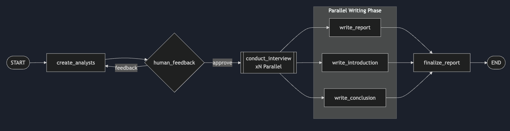
LangGraph Research Assistant
Multi-agent research system with parallel interviews, map-reduce synthesis, and human-in-the-loop approval.
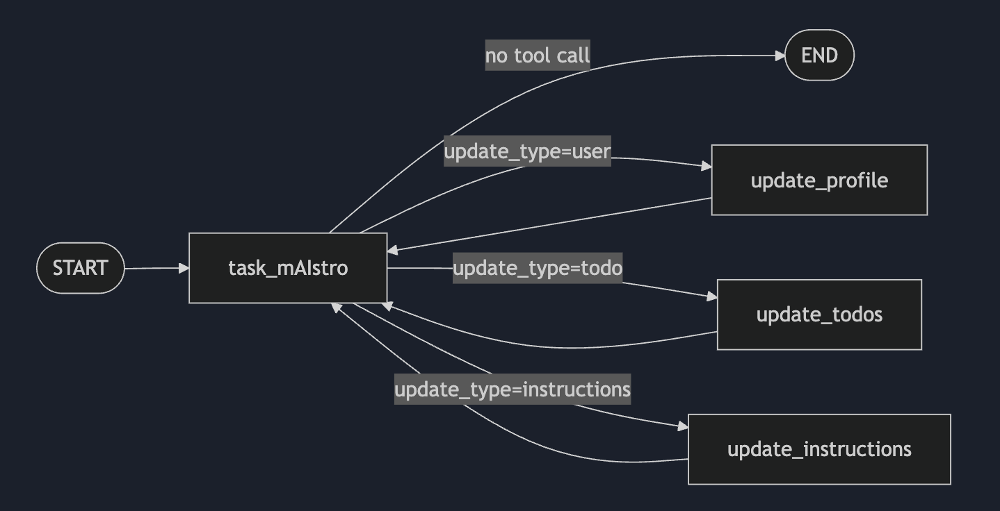
Task mAIstro
AI task manager with persistent memory (profile, todos, instructions) deployed via Docker Compose with Postgres and Redis.
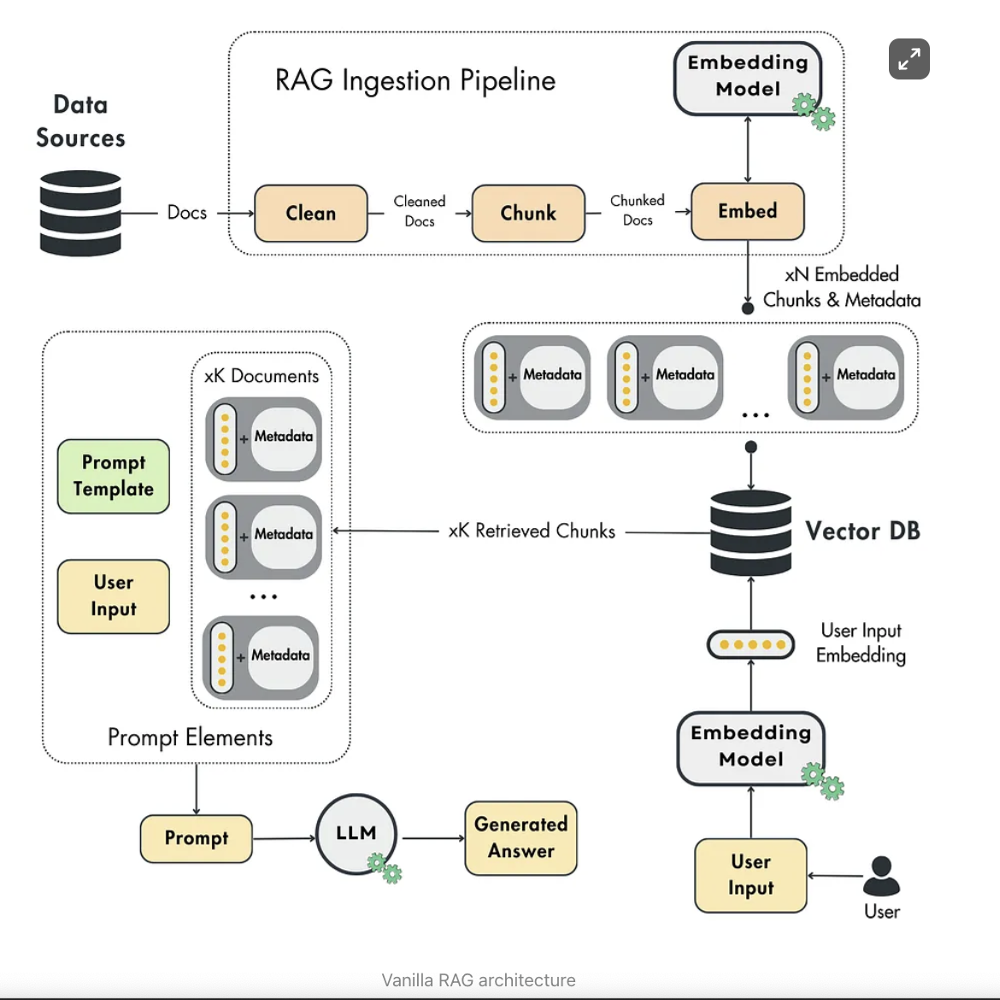
RAG from Scratch
Minimal RAG pipeline built from scratch with NumPy — no framework abstractions.
Semantic Search with LangChain
Natural language querying over PDFs using LangChain, ChromaDB, and HuggingFace embeddings.
LangChain RAG Patterns: Agent vs. Chain
Comparing LangChain Agent and Chain RAG patterns with multi-provider support.
LangChain Email Agent
AI email agent with auth-based tool access and human-in-the-loop approval via LangGraph.
graph LR
A[SmolLM] --> B[LoRA Fine-Tuning]
B --> C[AI-as-a-Judge Eval]
SmolLM Fine-tuning
Fine-tuning HuggingFace's SmolLM model on a toy instruction dataset with LoRA and AI-as-a-judge evaluation.
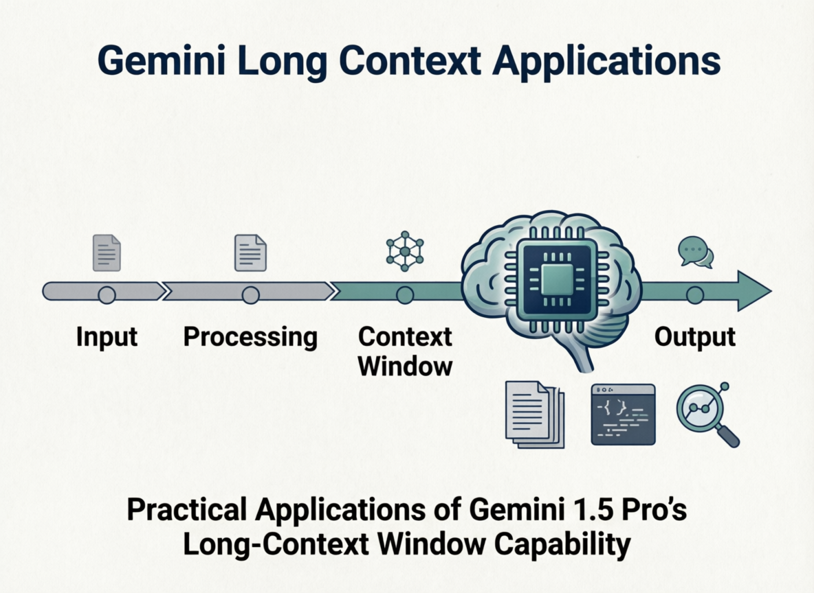
Gemini Long Context
Endangered language translation and codebase security analysis using Gemini 1.5 Pro's long-context window.

LoRA Insights: PEFT Recipes
Reproducing and extending LoRA/QLoRA experiments across Llama 3.2 and Qwen 2.5 on H100 GPU.
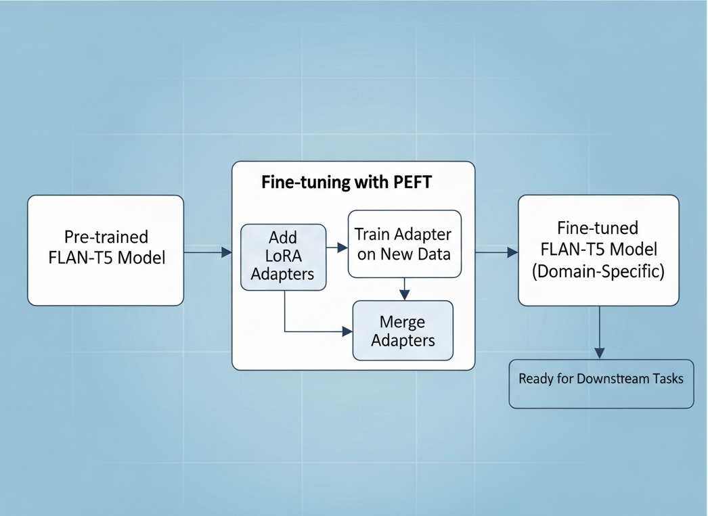
PEFT-FLANT5
Parameter Efficient Fine-Tuning of FLAN-T5 model for Dialogue Summarization.
graph LR
A[FLAN-T5] --> B[PEFT Fine-Tuning]
B --> C[PPO Training]
C --> D[Detoxified Model]
PEFT-FLANT5-Detoxification
Fine-Tune FLAN-T5 with Reinforcement Learning (PPO) and PEFT to Generate Less-Toxic Summaries
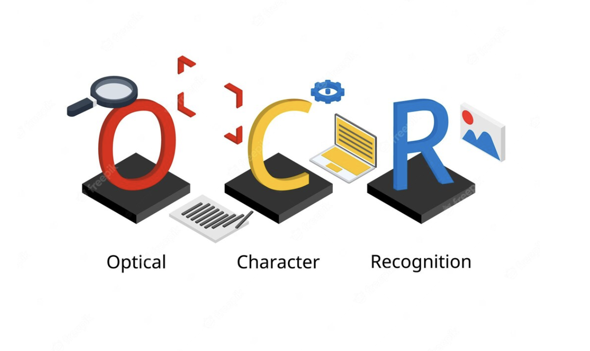
Captcha-OCR
OCR in captchas with Keras
AI Engineering / MLOps
Phi-3.5 Mini · Q4 · GPU
LLM Inference Benchmarks
Benchmarking llama.cpp, ExLlamaV2, and Ollama for production medical report generation at Lunit.
graph TB
subgraph Registry ["📦 Model Registry"]
M["🤖 Models"]
A["📁 Artifacts"]
Meta["📊 Metadata"]
end
style Registry fill:#1a202c,stroke:#9ca3af,color:#d1d5db,stroke-width:2px
style M fill:#2d3748,stroke:#9ca3af,color:#e2e8f0
style A fill:#2d3748,stroke:#9f7aea,color:#e2e8f0
style Meta fill:#2d3748,stroke:#f59e0b,color:#e2e8f0
Lunit Model Registry
A centralized model registry for managing the complete lifecycle of machine learning models.
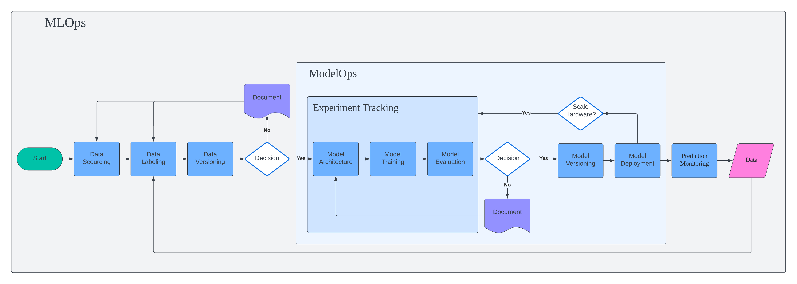
MLOps Orbit
This project marks the beginning of MLOps journey. Instead of focusing on piece of production-grade machine learning, I focus on building full end-to-end pipeline from data collection to deployment.
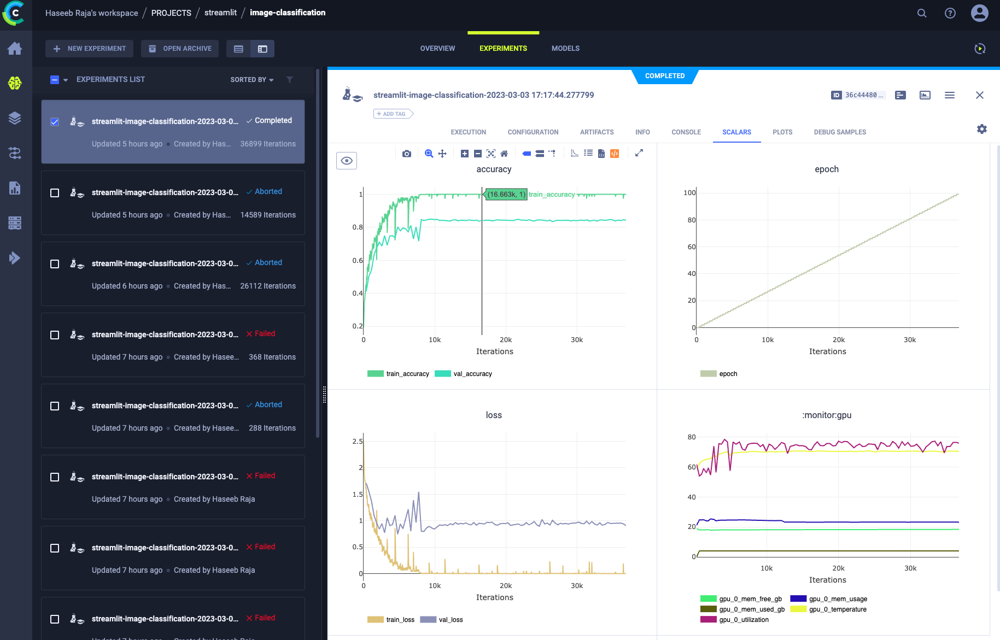
Exploring ClearML
A project to demonstrate the MLOps capabilities of ClearML framework
Computer Vision
Pivo Tracking
Improving and optimizing the performance of Pivo Tracking algorithm.
SCMS
A smart in-cabin monitoring system
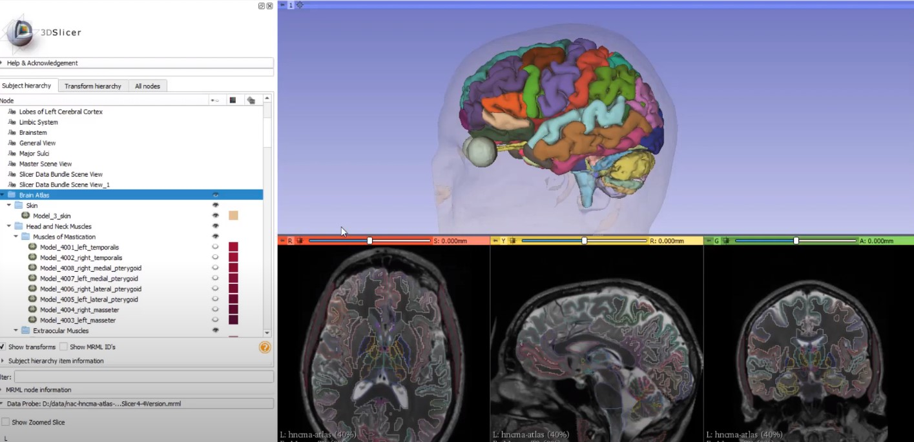
3D Artery Segmentation
Facial and temporal artery segmentation in CT volumes
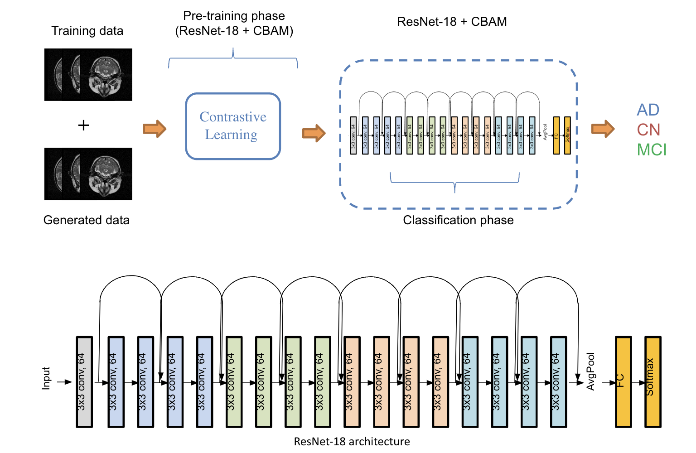
Alzheimer Disease Classification
Alzheimer's disease classification with deep learning
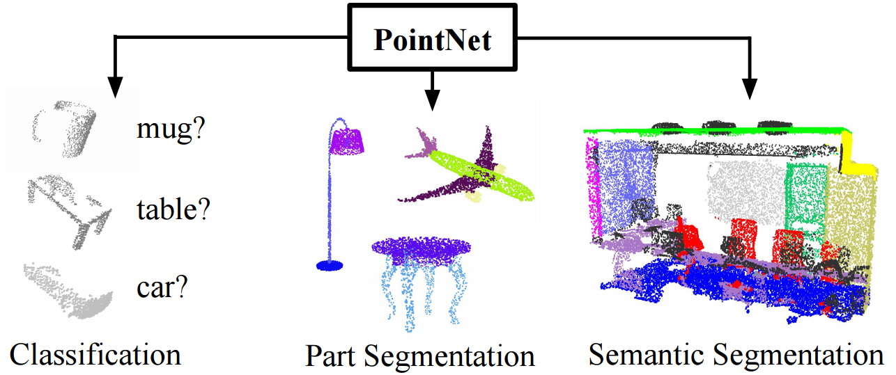
Facial Part Segmentation
Facial part segmentation in 3D point clouds
Point Cloud Converter
A web app to upload and convert point cloud to different formats.

Visual SLAM
A Visual SLAM solution for UAV mapping

Facial Landmark Detection
Facial landmark detection in patients heightmap images
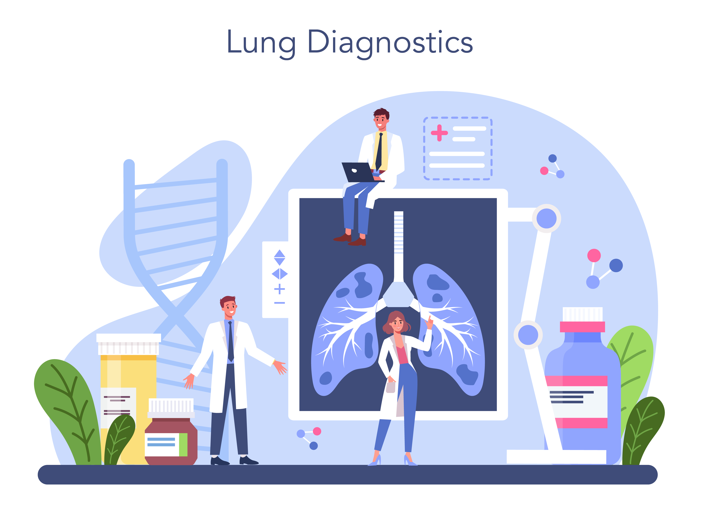
CT Lung Segmentation
Lung segmentation in CT volumes

Patient Pose Detection
Patient pose detection with deep learning
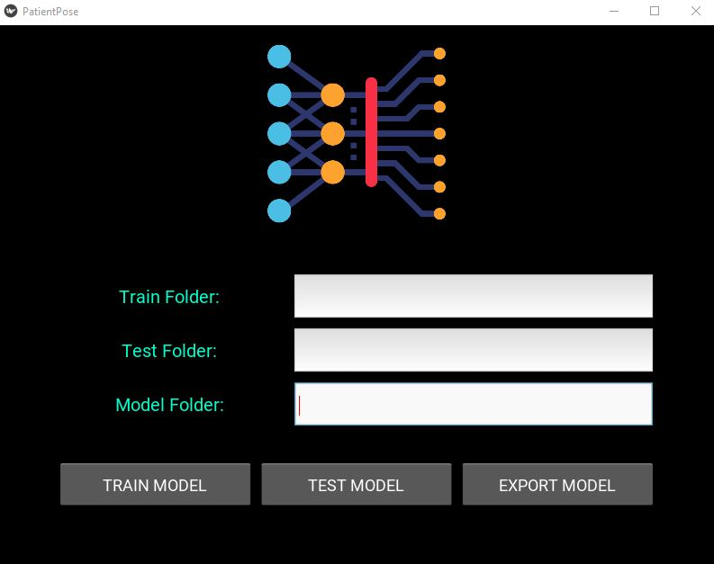
Patient Pose App
A GUI application to predict patient pose
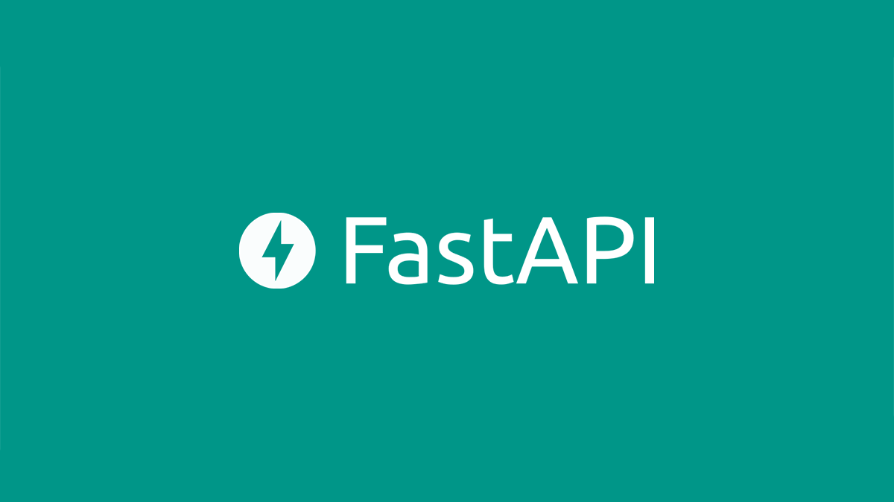
ML-API
Machine Learning prediction API
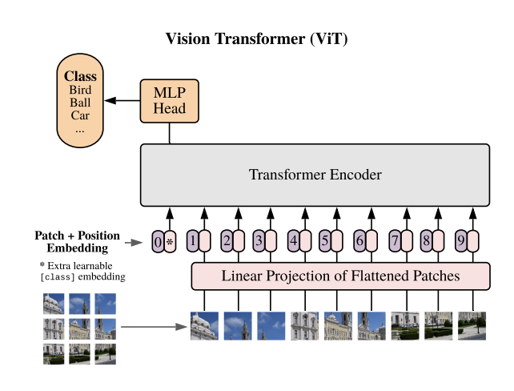
Vision Transformer
Building vision transformer from scratch

Super Image Resolution
Implementation of Residual Dense Network for SIR
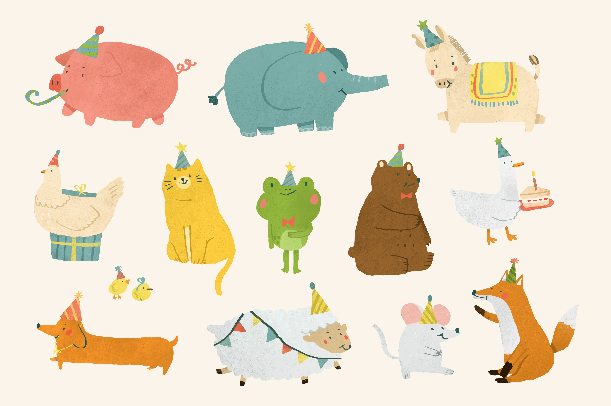
Image Classification Web App
An image classification web app with streamlit and gradio

Wisconsin Breast Cancer (Diagnostic)
Tumor diagnosis on Breast Cancer Wisconsin dataset
- Tensorflow implementation of "Progressive Growing of GAN (PGGAN)" with SSIM
- Person Reidentification with Siamese Network
- ViT Classification with Huggingface transformers
- A survey of deep learning techniques for small medical dataset
- A flexible and easy-to-follow Pytorch implementation of Hinton's Capsule Network.
- Global Wheat Detection Challenge - Kaggle
- Deep learning-based image dehazing network
- Deep learning-based video frame interpolation
- Deep learning-based image deblurring network
- Image classification with Bag of Words
- VAE MNIST
- CT Bone Segmentation
- Point cloud registration with Open3D
- An iOS application to detect patient breast region